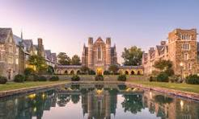
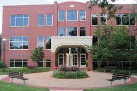

About Us

Welcome to Peace College, an institution dedicated to fostering excellence in education across various disciplines. Established with a vision to empower students with knowledge, skills, and values, we offer a diverse range of programs in science, arts, and commerce.
At Peace College, we believe in providing a holistic learning experience that goes beyond the confines of traditional education. Our dynamic and experienced faculty members are committed to nurturing the intellectual curiosity of our students while preparing them to face the challenges of the ever-evolving global landscape.
In our science department, students delve into the fascinating realms of biology, chemistry, physics, and mathematics, equipping themselves with the analytical and problem-solving skills necessary for scientific inquiry and innovation.
In the arts department, we celebrate creativity and critical thinking, offering programs in literature, languages, history, philosophy, and the fine arts. Through interdisciplinary approaches and a focus on cultural understanding, our students explore the complexities of the human experience and engage with diverse perspectives.
Our commerce department provides students with a comprehensive understanding of business principles, economics, accounting, finance, and management. With a blend of theoretical knowledge and practical applications, we prepare our students to excel in the dynamic world of commerce and entrepreneurship.
Beyond academics, Peace College offers a vibrant campus life enriched with extracurricular activities, community engagement initiatives, and opportunities for personal and professional growth. We are committed to creating a supportive and inclusive environment where every student can thrive academically, socially, and personally.
Join us at Peace College and embark on a transformative journey of learning, discovery, and fulfillment. Whether you aspire to pursue a career in science, arts, commerce, or beyond, we are here to empower you to reach your highest potential and make a positive impact on the world.
Address: No 3, Adeniyi Jones Street. Ikeja, Lagos State. Nigeria
Telephone: 011 884 3999
We look forward to having you!
Classes
We have well built facilities to accommodate your ward, Our College runs through Sciences, Arts and Humanities.

View more in our Gallery